My Java Notebook I
***** On Monday, 1/21/19, I started learning the fundamentals of Java on sololearn.com. *****
***** On Tuesday, 6/18/19, I completed the Java Tutorial course and was issued the certificate. *****
TAKE NOTE THAT THIS IS NOT A .JAVA FILE BECAUSE IT WILL BE A PLAIN TEXT FILE. INSTEAD, JAVA WILL BE COMPILED VIA THE METHOD SHOWN IN THIS VIDEO.
TL;DW
Skip to steps 3 - 5 if "NppExec" is already installed.
Skip to step 5 to execute the Java file that is already in the desired directory.
Welcome to Java!
Java is a high level, modern programming language designed in the early 1990s by Sun Microsystems and currently owned by Oracle.
Java is Platform Independent, which means that you only need to write the program once to be able
to run it on a number of different platforms!
Java is portable, robust, and dynamic, with the ability to fit the needs of
virtually any type of application.
Java guarantees that you'll be able to Write Once, Run Anywhere.
Java
More than 3 billion devices run Java.
Java is used to develop apps for Google's Android OS, various Desktop Applications, such as media players,
antivirus programs, Web Applications, Enterprise Applications (i.e. banking), and many more!
Learn, practice, and then join the huge community of Java developers around the world!
Your First Java Program
Let's start by creating a simple program that prints "Hello World" to the screen.
class MyClass {Result: (Example1.1.java)
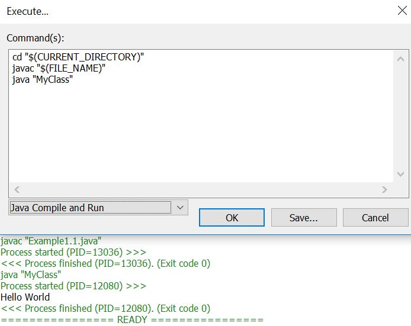 In Java, every line of code that can actually run needs to be inside a class.
In our example, we named the class MyClass. You will learn more about classes in the upcoming modules.
In Java, each application has an entry point, or a starting point, which is a
method called main.
Along with main, the keywords public and
static will also be explained later.
The main Method
To run our program, the main method must be identical to the signature:
public static void main(String[] args)For example, the following code declares a method called test, whcih doesn't return anything and has no parameters:
void test() The method's parameters are declared inside the parentheses that follow the name of the method. System.out.println()
Next is the body of the main method, enclosed in curly braces:
{ The println method
prints a line of text to the screen.
The System class and its out stream are used to access the println
method.
Semicolons in Java
You can pass a different text as the parameter to the println method to print it.
class MyClass {In Java, each code statement must end with a semicolon.
Remember: do not use semicolons after method and class declarations that follow with the body defined using the curly braces.Result: (Example1.2.java)
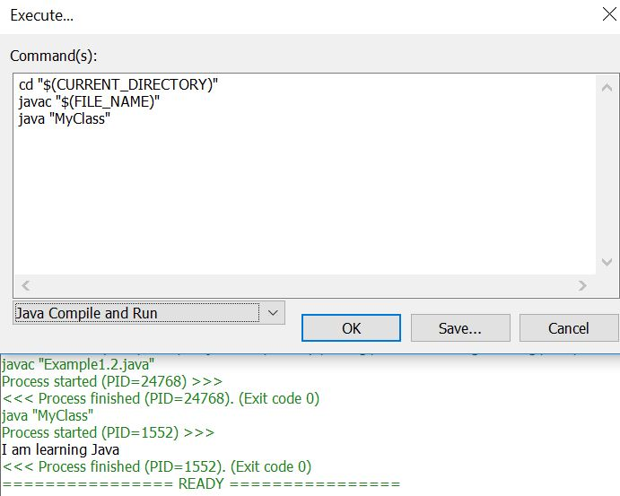 Comments
The purpose of including comments in your code is to explain what the code is doing.
Java supports both single and multi-line comments. All characters that appear within a comment
are ignored by the Java compiler.
A single-line comment starts with two forward slashes and continues until it reaches
the end of the line.
For example:
Multi-Line Comments
Java also supports comments that span multiple lines.
You start this type of comment with a forward slash followed by an asterisk, and end it with an
asterisk followed by a forward slash.
For example:
Note that Java does not support nested multi-line comments.
However, you can nest single-line comments within multi-line comments.
Documentation Comments
Documentation comments are special comments that have the appearance of multi-line comments, with the difference
being that they generate external documentation of your source code. These begin with a forward slash followed by two asterisks,
and end with an asterisk followed by a forward slash.
For example:
Javadoc is a tool which comes with JDK and it is used for generating Java code documentation in HTML format from Java source code. It has required documentation in a predefined format.
When documentation comment begins with more than two asterisks, Javadoc assumes that you want to create a "box" around
the comment in the source code. It simply ignores the extra asterisks.
For example:
Variables
Variables store data for processing.
A variable is given a name (or identifier), such as area, age, height, and the like. The name uniquely identifies each variable,
assigning a value to the variable and retrieving the value stored.
Variables have types. Some examples:
You can declare a variable of a type and assign it a value. Example:
String name = "David";This creates a variable called name of type String, and assigns it the value "David".
It is important to note that a variable is associated with a type, and is only capable of storing values of that particular type. For example, an int variable can store integer values, such as 123; but it cannot store real numbers, such as 12.34, or texts, such as "Hello".Examples of variable declarations:
class MyClass {Result: (Example1.3.java)
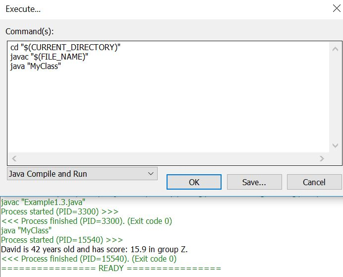char stands for character and holds a single character.
Another type is the Boolean
type, which has only two possible values: true and false.
This data type is used for simple flags that track true/false conditions.
For example:
boolean online = true;
You can use a comma-separated list to declare more than one variable of the specified type.
Example: int a = 42, b = 11;
The Math Operators
Java provides a rich set of operators to use in manipulating variables. A value used on either side of an operators
is called an operand.
For example, in the expression below, the numbers 6 and 3 are operands of the plus operator:
Java arithmetic operators:
Addition
The "+" operator adds together two values, such as two constants, a constant and a variable, or a variable and
a variable. Here are a few examples of addition:
int sum1 = 50 + 10;
int sum2 = sum1 + 66;
int sum3 = sum2 + sum2;
Subtraction
The "-" operator subtracts one value from another.
int sum1 = 1000 - 10; Multiplication
The "*" operator multiplies two values.
int sum1 = 1000 * 2;The "/" operator divides one value by another.
int sum1 = 1000 / 2; Modulo
The modulo (or remainder) math operation performs an integer
division of one value by another, and returns the remainder of that division.
The operator for the modulo operation is the percentage (%) character.
Example:
Result: (Program.java)
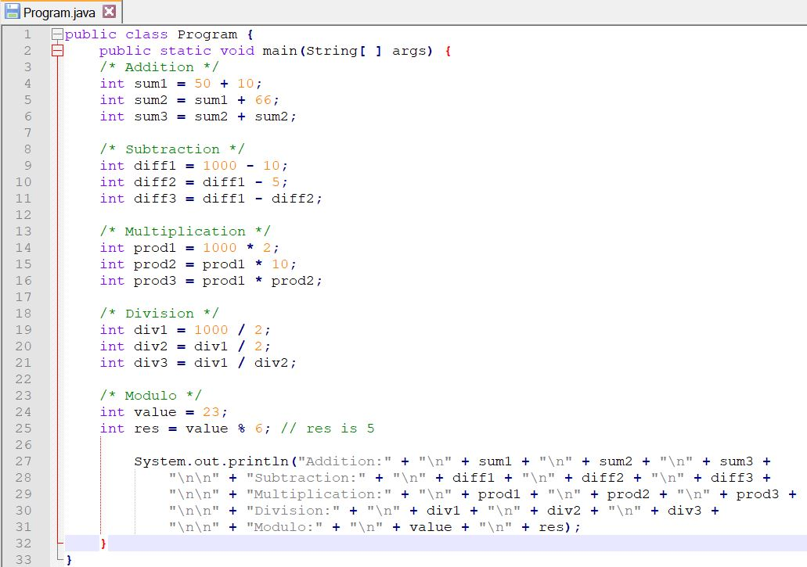 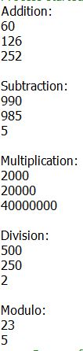 Increment Operators
increment or decrement operator provides a more convenient and compact way to increase and decrease
the value of a variable by one.
For example, the statement x = x+1; can be simplified to ++x;
Example:
The decrement operator (--) is used to decrease the value of a variable one by one.
int test = 5; Prefix & Postfix
Two forms, prefix and postfix, may be used with both the increment and decrement operators.
With prefix form, the operator appears before the operand. While in postfix form, the operator appears after
the operand. Below is an explanation of how the two forms work:
Prefix: Increments the variable's value and uses the new value in the expression.
Example:
The value of x is first incremented to 35, and is then assigned to y, so the values of both x and y are now 35.
Postfix: The variable's value is first used in the expression and is then increased.
Example:
x is first assigned to y, and is then incremented by one. Therefore, x becomes 35, while y is assigned the value of 34.
The same applies to the decrement operator. Assignment Operators
You are already familiar with the assignment operator (=), which assigns a value to variable.
int value = 5;This assigned the value 5 to a variable called value of type int
Java provides a number of assignment operators to make it easier to write code.
Addition and assignment (+=)
int num1 = 4;Subtraction and assignment (-=)
int num1 = 4;Result: (Program1.java)
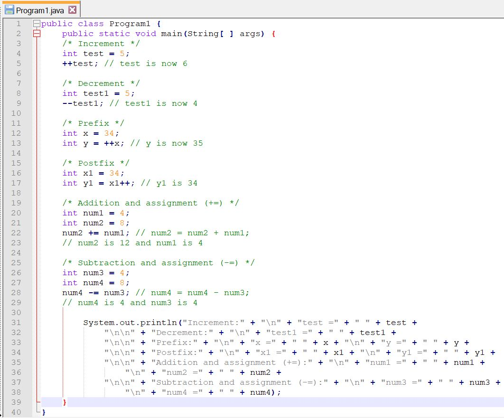 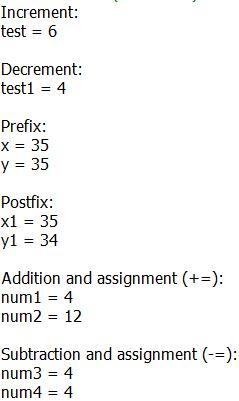 Strings
String is an object that represents a sequence of characters.
For example, "Hello" is a string of 5 characters.
For example:
String s = "SoloLearn"; String Concatenation
The + (plus) operator between strings adds them together to make a new string.
This process is called concatenation.
The resulted string is the first string put together with the second string.
For example:
Result: (Program2.java)
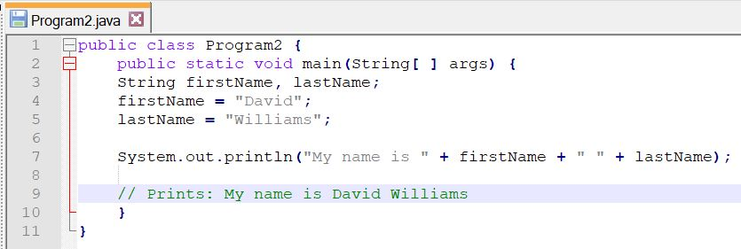 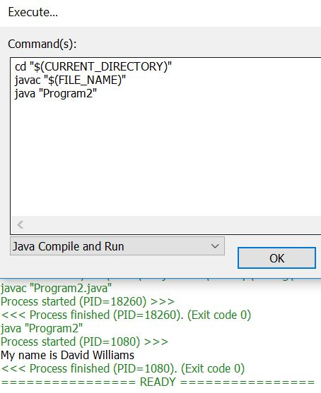 Getting User Input
While Java provides many different methods for getting user input, the Scanner object is the most common, and perhaps the easiest to implement. Import the Scanner class to use the Scanner object, as seen here:
import java.util.Scanner;In order to use the Scanner class, create an instance of the class by using the following syntax: Scanner myVar = new Scanner(System.in);
You can now read in different kinds of input data that the user enters.
Here are some methods that are available through the Scanner class:
Example of a program used to get user input:
import java.util.Scanner;Result: (UserInput.java)
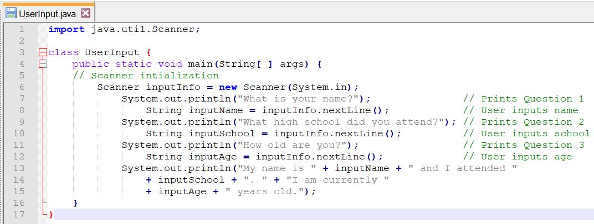 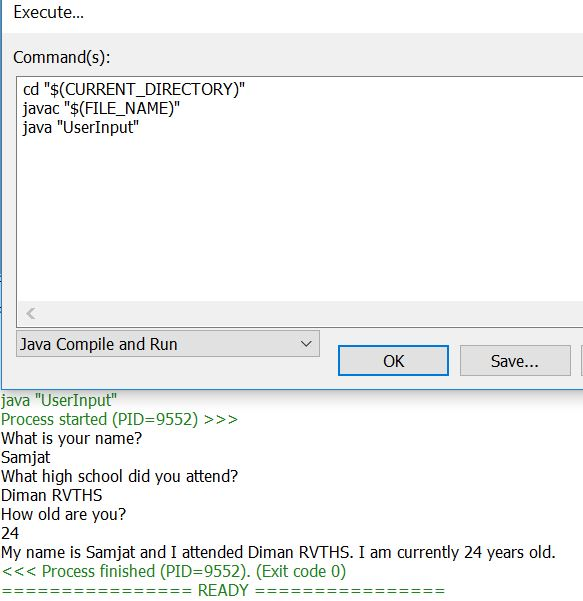 "import java.util.Scanner;"
In Java, there are packages, which are like containers where you can put the classes in.
Whenever we want to take a specific class in its container, we use "import".
In Java, we use "." to denote the hierarchy.
Java.util.Scanner (inside java we have util, and inside util we have Scanner)
Example: Owner.Documents.picture
Owner/Documents/pictures (in Windows)
So the full meaning is:
import Scanner class, which is in the util folder and inside the java folder.
"util" stands for utility and contains utility classes.
"Scanner" is a class that takes inputs from the user.
import(bring) java(from java).util(in the utility package).Scanner(this class)